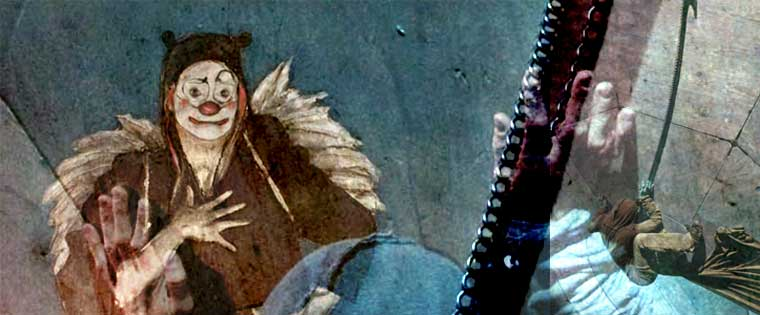
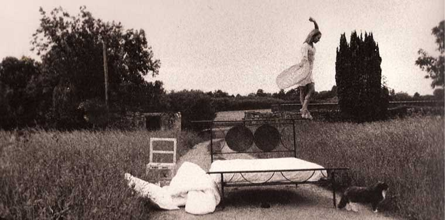
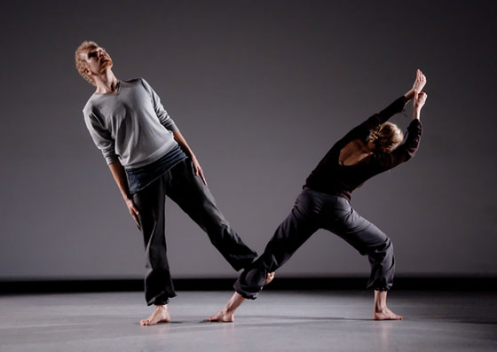
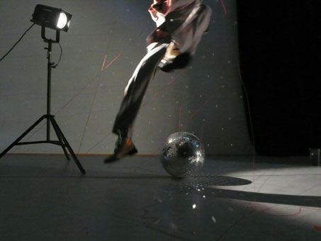
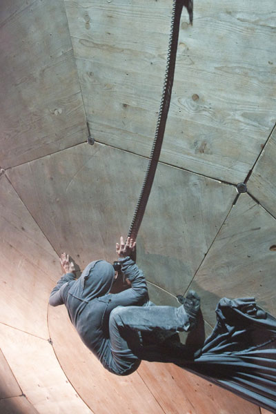
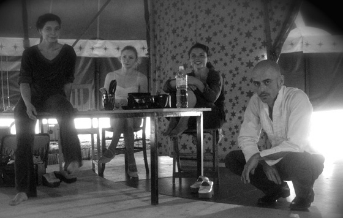
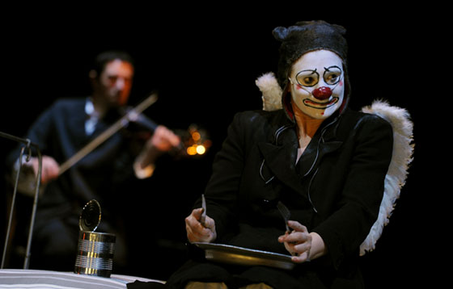
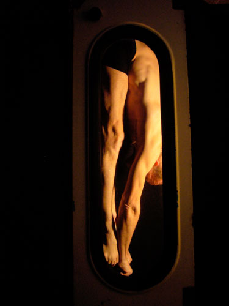

|  |
| image © Andrea Linet, Cécile Mathé, Su |

|
Les 5émes Rencontres de monthelon
du 28 au 31 juillet 2010 |
|
| Programme |
|
| Mercredi 28 juillet | 18 h |
|
| Ouverture des Rencontres |
|
| Mercredi 28 juillet | 18 h 30 |
en plein air |
Promenade
avec (entre autres) : Ayin de Sela, L'Homme Arbre, Cécile Mont-Reynaud |
| 
|
« Histoires Inedit--Ayin De Sela »
Un lit pour le voyage intime d'une fil de ferriste
Photo © Alexandra Karam
|
| Mercredi 28 juillet | 20 h |
sous châpiteau |
tok [ F ]
le p'tit Cirk : une fantaisie burlesque et poétique |
|
| Mercredi 28 juillet | 20 h |
en salle |
ohi [ Fin ]
Danse contemporain par Saku Koistinen et Laura Vesterinen |
|  | " Ohi " (to pass)
fragments about being
a human is a contemporary dancepiece choreographed by Saku Koistinen
Assistant for the choreographer: Laura Vesterinen
Dancers: Saku Koistinen, Laura Vesterinen
Scenography: Hanna Käyhkö
Sound design: Saku Koistinen
Costumes: Laura Vesterinen
Ohi is a world with it's own logic, where two human beings are trying to learn their way to exist - alone and together. |
|
|
Mercredi 28 juillet | 21 h 30 |
sous châpiteau |
Flying fish circus [ Ch, USA, F , E ]
Création en cours par Cie Mezcla |
|
| Mercredi 28 juillet | 21 h 30 |
box |
The onion project [ Dk, F ]
Création par « DasArts Final Project » et « Cie Dorina Fauer » |
«The Onion Project « est une performance sous forme de
conférence sur l'expérience physique des émotions.
Lors d'une série d'expériences, nous allons mesurer
l'amplitude de l'irrésistible besoin de pleurer et
allons
décomposer son mécanisme. Les émotions laissent
une trace dans nos corps et nos esprits. Nous allons
interroger le fonctionnement de la mémoire, mais
pas la mémoire comme garante de l'histoire ou de
la vérité, mais comme une composition énigmatique
de la relation entre perception et conscience.
Direction : Cille Lansade ••• Performers : Mille Lundt, Cille Lansade, Jean-Benoit Mollet
Sound : Pierre-Yves De Jonge
Dramatic advisers : Delphine Lanson and Zhana Inovana
|  |
|
| Mercredi 28 juillet | 23 h |
en plein air |
attache [ Ch, B, F ]
Danse Son Cirque par Cie Loutoup |
|  |
« Attache »
Ils sont trois, enfin quatre avec le lampadaire.
Le premier gribouille des sons magnétiques,
un fatras puissant et métallique.
La seconde est carrément étrange, elle coule,
s'extirpe tant bien que mal car sa peau garde
l'emprunte de chaque rencontre. Le troisième,
embrasse les limites de sa liberté, joue, roule,
et les cercles qu'il dresse grandissent trop vite.
Loutop-contemporary dance nomads
www.loutop.com |
|
| Jeudi 29 juillet | 17 h |
en plein air |
Promenade
avec (entre autres) : Ayin de Sela, L'Homme Arbre, Cécile Mont-Reynaud |
|
| Jeudi 29 juillet | 18 h 30 |
Omnibus |
Ni Omnibus [ F ]
Création de Jean-Paul Lefeuvre avec l'Yonne en Scène |
|
| Jeudi 29 juillet | 20 h |
sous châpiteau |
Flying fish circus [ Ch, USA, F , E ]
Création en cours par Cie Mezcla |
« Flying Fish Circus »
Dans l'intimité des coulisses, face au rideau,
jongleur, trapèziste, équilibriste ... jouent leur peau.
En huit clos, à l'ombre du spectacle, s'entremêlent
tensions, abandons, imprévus. Au loin, sous les
projecteurs, le cirque bât son plein. |  |
|
| Jeudi 29 juillet | 20 h 30 |
omnibus |
Ni Omnibus [ F ]
Création de Jean-Paul Lefeuvre avec l'Yonne en Scène |
|
Jeudi 29 juillet | 21 h |
box |
The onion project [ Dk, F ]
Création par « DasArts Final Project » et « Cie Dorina Fauer » |
|
| Jeudi 29 juillet | 22 h |
sous châpiteau |
tok[ F ]
le p'tit Cirk : une fantaisie burlesque et poétique |
|
| Jeudi 29 juillet | 21 h |
box |
carnets d'une voleuse [ F ]
Variation autour de Jean Genet pour une clown et un musicien |
|  | « Carnets d'une voleuse »
Angèle, avec son nez rouge et ses grandes godasses,
a été choisie pour incarner un homme, en prison pour
cambriolage, écrivain et homosexuel.
Elle découvre les repas misérables en cellule et la beauté
irrésistible d'un condamné à mort... |
|
| Jeudi 29 juillet | 23 h |
en plein air |
attache [ Ch, B, F ]
Danse Son Cirque par Cie Loutoup |
|
| Jeudi 29 juillet | 24 h |
au bar |
bilan du jour
autour d'un verre |
|
| Vendredi 30 juillet | 17 h |
omnibus |
Ni Omnibus [ F ]
Création de Jean-Paul Lefeuvre avec l'Yonne en Scène |
« Ni Omnibus »
"4 mètres carré sera ma piste, 25 places vos gradins.
Nous partagerons cet espace réduit le temps d'un
trajet immobile. Et ces 8 mètres cube de contrainte
joueront l'agrès principal, le 1er rôle..." |
 |
|
| Vendredi 30 juillet | 17 h 30 |
en plein air |
Promenade
avec (entre autres) : Ayin de Sela, L'Homme Arbre, Cécile Mont-Reynaud |
|
| Vendredi 30 juillet | 18 h |
en salle |
Les Maiers [ D ]
Cirque |
|
|
Vendredi 30 juillet | 20 h |
sous châpiteau |
Flying fish circus [ Ch, USA, F , E ]
Création en cours par Cie Mezcla |
|
| Vendredi 30 juillet | 20 h |
box |
carnets d'une voleuse [ F ]
Variation autour de Jean Genet pour une clown et un musicien |
|
| Vendredi 30 juillet | 20 h 30 |
Box |
Impro vocales [ F ]
Musique par Christine Coen Emry |
|
| Vendredi 30 juillet | 22 h |
sous châpiteau |
tok[ F ]
le p'tit Cirk : une fantaisie burlesque et poétique |
|
| Jeudi 29 juillet | 23 h |
en plein air |
attache [ Ch, B, F ]
Danse Son Cirque par Cie Loutoup |
|
| Vendredi 30 juillet | 23 h |
au bar |
bilan du jour
autour d'un verre
|
|
| Samedi 31 juillet | 11 h |
en salle |
Réunion du Comité d'orientation de monthelon
|
|
| Samedi 31 juillet | 19 h |
En plein air |
Apéro
Le public nourrit les artistes à l'occasion d'un apéritif pris en commun. Les artistes vont partager avec vous des biens précieux : leurs spectacles. Partagez avec eux ce que vous aimez : bon vin, dessert maison, fromage de la région, objet insolite, livre, vêtements de haute couture ... |
|
| Samedi 31 juillet | 21 h |
|
LE grand cabaret de clôture
|
|
| début de page |
|